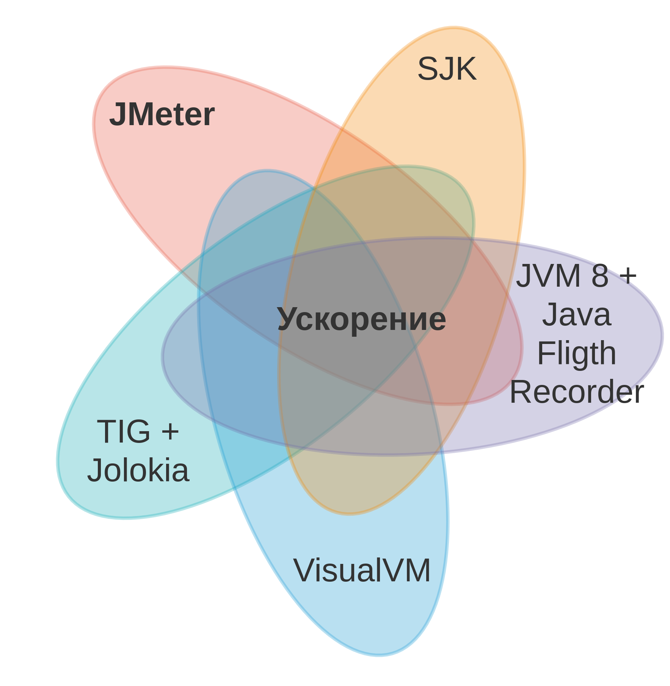
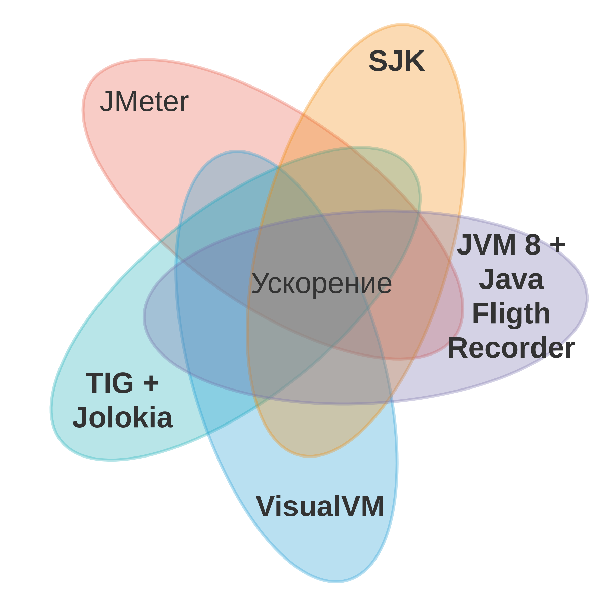
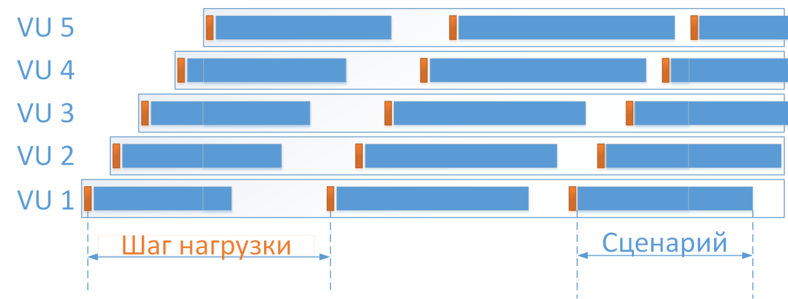

Бываю на конференциях

Вячеслав Смирнов
Специалист по тестированию
производительности, Райффайзенбанк
Цикл: 1...X GET-запросов на локальный HTTP-сервер
Цикл: 1...X GET-запросов на локальный HTTP-сервер
Цикл: 1...X GET-запросов на локальный HTTP-сервер
Цикл: 1...X GET-запросов на локальный HTTP-сервер
❌ HTTP Request: keepAlive для одного запроса в сценарии
🔼 Loop Controller: количество запросов
✔️ Linux: /proc/sys/net/ipv4/tcp_tw_reuse
❌ Apache.JMeter: httpclient.reset_state_on_thread_group_iteration
❌ keepAlive для одного запроса в сценарии
🔼 количества запросов в одном сценарии до 100
✔️ /proc/sys/net/ipv4/tcp_tw_reuse
❌ httpclient.reset_state_on_thread_group_iteration
⚙️ ядра Linux (кроме net.ipv4.tcp_tw_reuse)
⚙️ jvm: java.net.preferIPv4Stack, http.maxConnections
Курс по профилированию JVM
Что профилировать?
Замедляю Apache.JMeter
Курс по Apache.JMeter, чаты
Как его ускорить?
Ускоряю Apache.JMeter
«Сапожник с сапогами»
«Сапожник с сапогами»
summary + 1454 in 00:00:30 = 48.5/s Avg: 0 Min: 0 Max: 2 Err: 0 (0.00%) Active: 3 Started: 2580 Finished: 2577summary = 5155 in 00:03:02 = 28.3/s Avg: 0 Min: 0 Max: 19 Err: 0 (0.00%)summary + 1684 in 00:00:30 = 56.1/s Avg: 0 Min: 0 Max: 2 Err: 0 (0.00%) Active: 8 Started: 3427 Finished: 3419summary = 6839 in 00:03:32 = 32.2/s Avg: 0 Min: 0 Max: 19 Err: 0 (0.00%)summary + 488 in 00:00:30 = 16.1/s Avg: 2 Min: 0 Max: 361 Err: 0 (0.00%) Active: 155 Started: 3818 Finished: 3663summary = 7327 in 00:04:03 = 30.2/s Avg: 0 Min: 0 Max: 361 Err: 0 (0.00%)java.lang.OutOfMemoryError: Java heap spaceKilled
Задача: 100 000 операций за час
Выделяем 1 поток в JMeter:
Задача: 100 000 операций за час
Выделяем 1 000 потоков в JMeter:
Задача: 100 000 операций за час
Выделяем 10 000 потоков в JMeter:
Задача: Сколько операций за час при 1 000 потоках?
CI/CD метрика
Задача: 100 000 операций за час ~ 28 операций/транзакций в секунду
Плавный разгон
Задача: 100 000 операций за час ~ 28 операций в секунду
Большая первая ступень:
Задача: 100 000 операций за час ~ 28 операций в секунду начинаются
А Thread Group продолжит создавать потоки по расписанию
Что приведёт к взрывному росту количества активных потоков
Будут фиксироваться ошибки, на них надо реагировать
По умолчанию проигнорируется:
На ошибки надо реагировать:
TODO: посчитать, профилирование SJK, JFR
TODO: посчитать, профилирование SJK, JFR
Шаг нагрузки: Test Action + Constant Throuthput Timer (не меньше указанного)
Шаг нагрузки: Test Action + Precise Throuthput Timer (равен указанному)
отключение ❌ keepAlive для одного запроса в сценарии
отключение ❌ keepAlive для одного запроса в сценарии
| Request Count | keepAlive | Threads | RPS | Error | Bottleneck/Exception |
|---|---|---|---|---|---|
| 1 | off | 2 | 970 | 0 | socketConnect 80% |
| 1 | on | 2 | 650 (480) | 26% | NoRouteToHostException |
| 10 | on | 2 | 5420 (5300) | 2% | NoRouteToHostException |
| 100 | on | 2 | 19400 | 0 | |
| 100 | on | 1 | 7980 | 0 | socketRead 49% socketWrite 14% socketSetOption 12% |